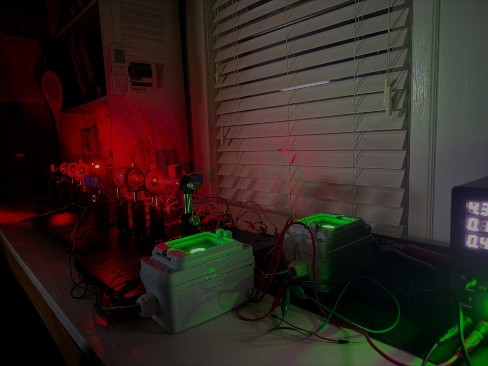
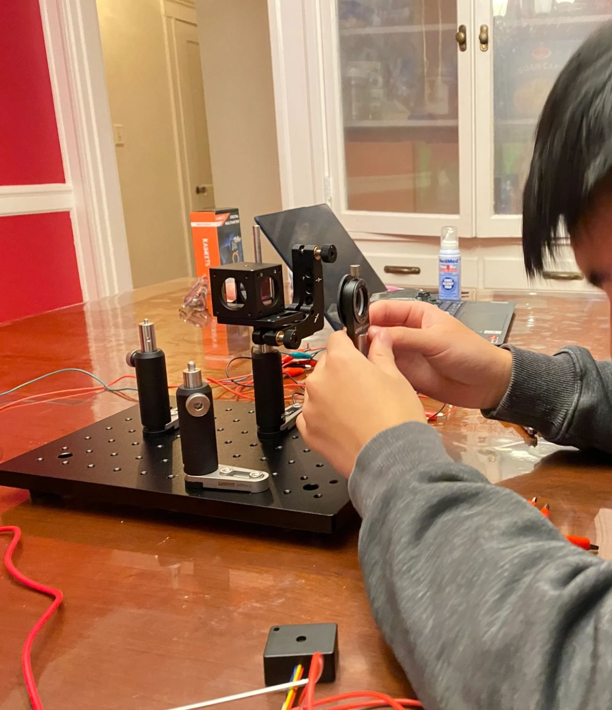
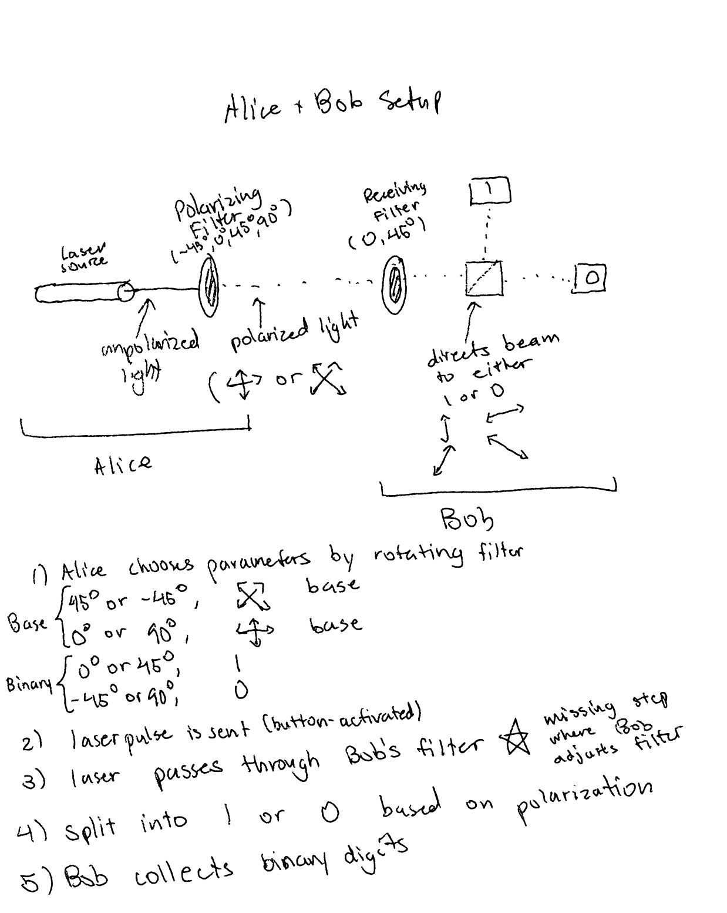
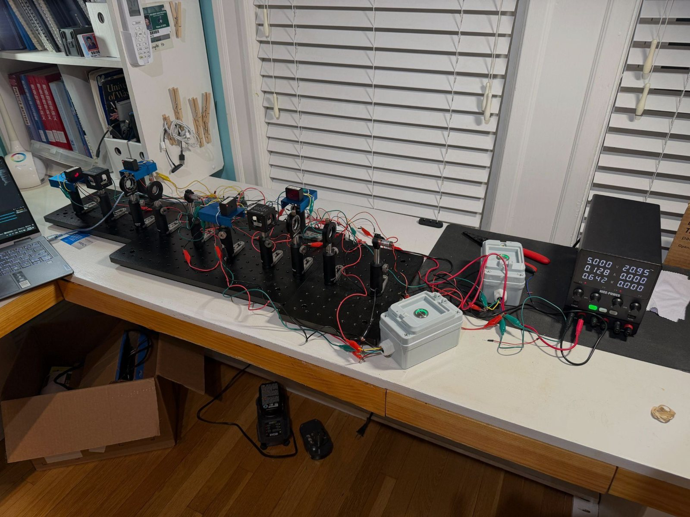
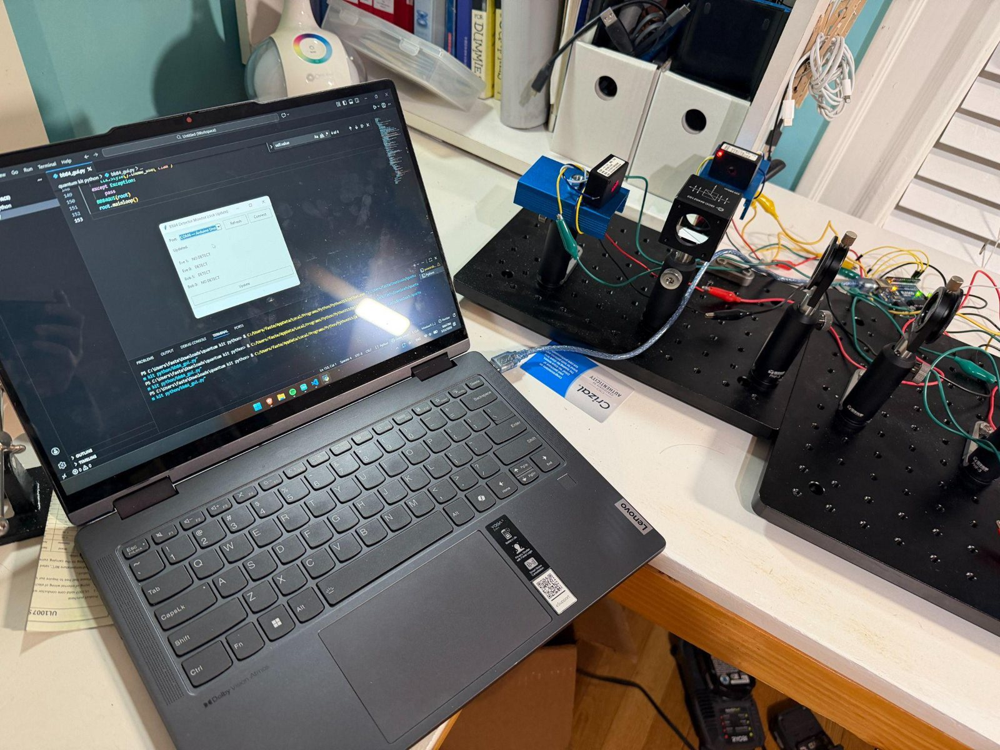

Throughout 10th grade I studied quantum information science and toured quantum communication labs to learn about the emerging quantum internet. That summer I built a setup that demonstrates the BB84 encryption protocol, so I could share what I'd learned back home.

The constraint
I didn't have the budget for the expensive devices needed to hold real quantum states, so I redesigned the photon physics as simple laser polarization. Lasers, polarizing filters, beamsplitters and photosensors are the main components, about 20+ parts in all. The kit runs both the Alice–Bob protocol and the Alice–Eve–Bob case, where an eavesdropper's measurements give her away.


Reading the bits
An Arduino reads the photosensor signal and sends it to a laptop. I used Python and C++ to read and display the measurements.

